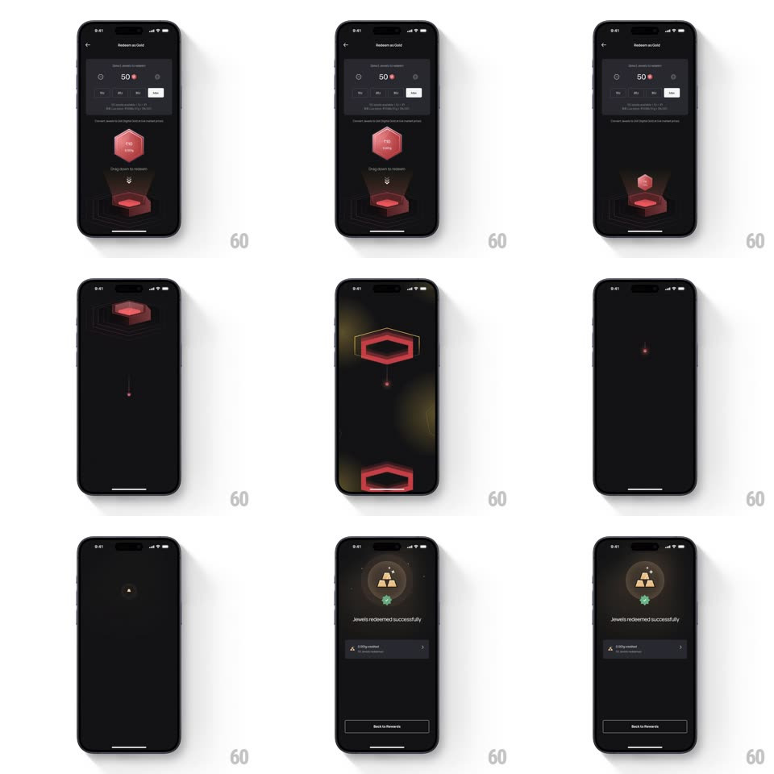

Media
Frame-by-frame

Rebuild this animation 1:1: Jupiter's drag-to-redeem - the jewel is dragged down into its glowing portal, drops through the screen as a falling ember, and the view morphs into the gold reward success screen.

Rebuild this animation 1:1: Jupiter's drag-to-redeem - the jewel is dragged down into its glowing portal, drops through the screen as a falling ember, and the view morphs into the gold reward success screen. ## Integration Integration: stack-agnostic spec - springs given as stiffness/damping, timed motions as duration + curve; map every value to your framework and animation library of choice. ## Scene A dark "Redeem as Gold" screen: a jewels counter card (50 jewels), a red hexagonal jewel floating above a glowing pedestal portal with "Drag down to redeem", and the success screen (gold bars icon with a green check badge, "Jewels redeemed successfully", a credited-grams row, Back to Rewards button). ## Motion spec Pattern: drag-into-portal with vertical fall transition, ~1.5s after release. - Idle: the jewel hovers with a gentle bob (translateY +-6px, 1.2s, ease-in-out) and the portal glow pulses (opacity 0.6 -> 1, same cycle). - Drag: the jewel tracks the finger 1:1; nearing the portal it scales down slightly (0.9) and the portal brightens. - Release in the portal: the jewel drops in (accelerating fall into the pedestal, 300ms, ease-in) and the pedestal flashes (glow scale 1 -> 1.4 + fade, 350ms). - Transition: the screen dims to black as a tiny ember falls from the portal down the center of the screen (700ms, accelerating) - the fall carries the eye into the next screen. - Success: the gold bars icon rises into center (translateY 24px -> 0 + fade, 350ms), the check badge pops (scale 0 -> 1, spring ~400/16), and the copy and Back button fade up staggered (200ms each, +100ms apart). ## Calibration - Releasing outside the portal springs the jewel back to its hover spot (spring ~380/20). - The ember fall is the through-line: one continuous vertical motion from portal to success icon. ## Reduced motion Crossfade from the jewel drop to the success screen (300ms). ## Don't miss - The jewel only redeems on release inside the portal bounds. - The success check pops after the gold icon lands, not with it.